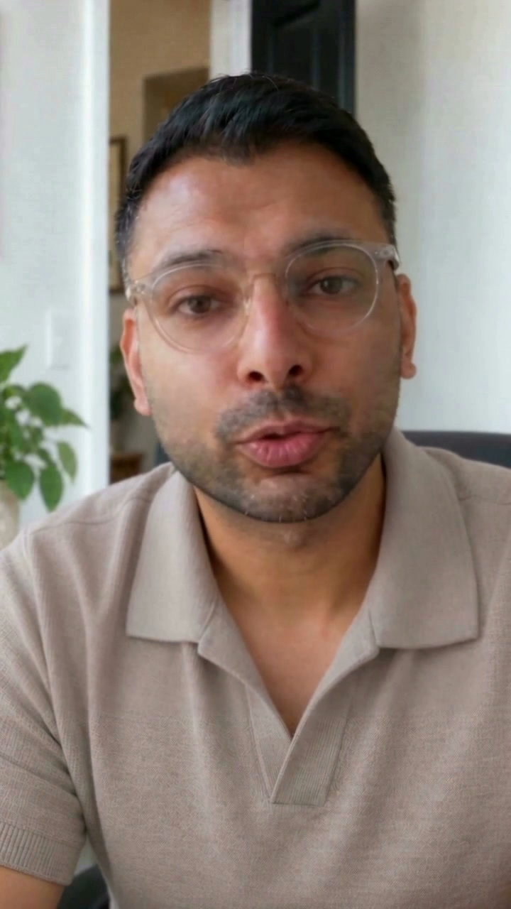
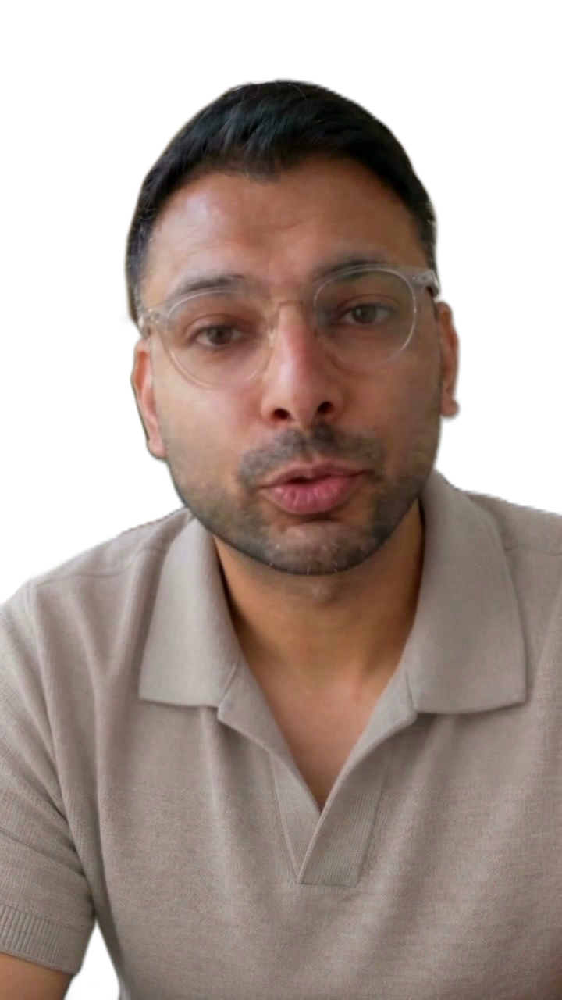
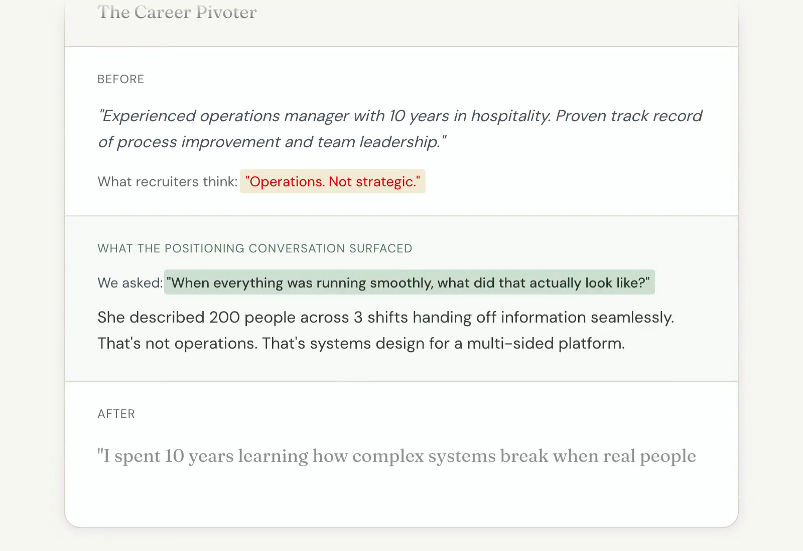

“The app isn’t a daily driver.” Nothing changes when a user opens the app on a Tuesday morning with 5 minutes.
“I just need to apply.” Users skip positioning and rush to resume generation.
Knowing what to change still comes from talking to people.
